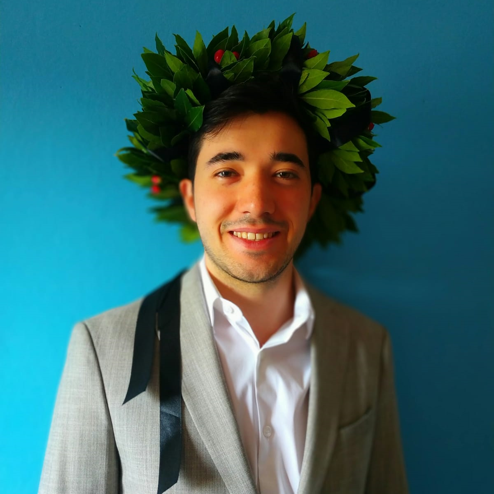

Hi, I'm Alessandro
Software Engineer | Full Stack & Embedded Systems
I'm a Software Engineer with 4+ years of experience working across software and firmware development in the industrial automation domain.
I currently contribute to a company that designs, manufactures, and distributes high-precision laser ranging sensors (LIDAR), where reliability, accuracy, and clean architecture are non-negotiable.
What I do:
- Full-Stack: Modern interfaces with React, Swift & Python.
- Embedded: High-performance C++ software & firmware.
- Digital Transformation: Modernizing internal workflows.
My Experience so far
Triple-IN GmbH
May 2024 - PresentHamburg, Germany
Software Engineering (Full Stack & Embedded)
Architected a low-latency React/C++ full-stack engine for real-time LiDAR visualization, replacing legacy software with a high-performance 2D rendering interface that improved UI/UX and configuration speed.
Developed C++ firmware and software for high-precision laser ranging sensors used in industrial automation systems with strict performance and reliability requirements.
Systems Engineering & Collaboration
Collaborated with product, hardware, electronics, and systems teams to deliver end-to-end solutions spanning embedded firmware and higher-level applications.
Applied clean architecture principles to reduce technical debt and improve long-term maintainability across the stack.
Developer Tools & Digitalization
Led the digitalization of internal workflows by designing and developing full-stack applications using React and Swift.
Built a shared Python library enabling easy integration into internal systems, improving development efficiency, traceability, and scalability across engineering teams.
Teleconsys S.p.A.
Oct 2022 - Apr 2024Rome, Italy
Full Stack Software Engineer
Full Stack Software Engineer for ApplyNow, a comprehensive enterprise solution for creating and managing digital workflows and forms. Developing and maintaining React frontend and Node.js backend components and macro functionalities, ensuring a choesive user experience.
AI & ML Developer
Member of the innovation unit specialized in creating cutting-edge solutions using artificial intelligence and machine learning. Focusing on integrating ML models into production environments to solve complex business automation challenges.
Academic Background
Sapienza University of Rome
2020 - 2022M.Sc. Computer Engineering | AI & Robotics
Grade: 110L / 110
Specialized in visual odometry and neural networks. Completed the highly selective "Percorso d'Eccellenza" (Path of Excellence), involving 200 hours of additional advanced research and PhD-level coursework.
Awarded "Outstanding Graduate" at Sapienza University of Rome (2021/2022).
Completed the highly selective "Percorso d'Eccellenza" (Path of Excellence), involving 200 hours of additional advanced research and PhD-level coursework.
View Key Coursework
UNIMORE
2017 - 2020B.Sc. Computer Engineering
Grade: 100 / 110
Consolidated foundations in C, Java, Python, and Mathematics. The thesis, in collaboration with Bosch and the Municipality of Mantova, focused on IoT monitoring systems for smart parking.
Let's Connect
Feel free to reach out for collaborations or just to say hi!